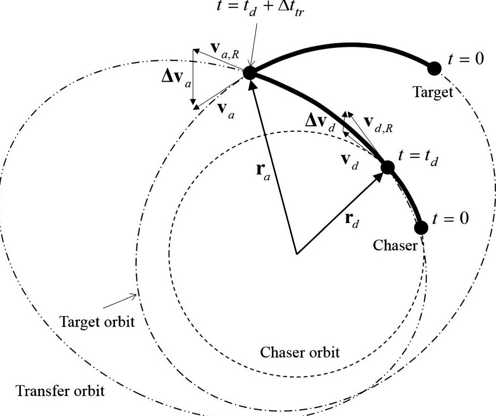

Overview
Completed as a five-person Team Pilot Project, this work investigates numerical Lambert-transfer solutions for prescribed flight times, fuel-optimal transfer timing, and J2-perturbed motion. The team developed three MATLAB solvers and compared results against reference algorithms and GMAT/STK trajectory visualizations.
My contribution
Co-conducted the literature review of established Lambert algorithms and co-implemented Solver 3: a J2-perturbation correction using numerical propagation, a state transition matrix, and an iterative shooting method. Solver development and validation responsibilities were shared across the project team, as documented in the report.
Methods and results
- Classical two-body Lambert transfers at specified time of flight
- Minimum-ΔV transfer-time optimization
- J2-perturbed trajectory correction and numerical-method comparisons
Project report
Course team project; not a peer-reviewed publication. The report includes methodology, validation, visualizations, and a team contribution table.